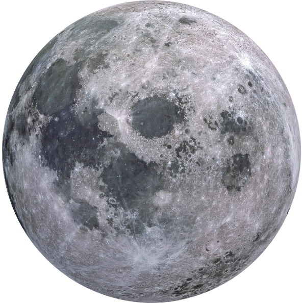
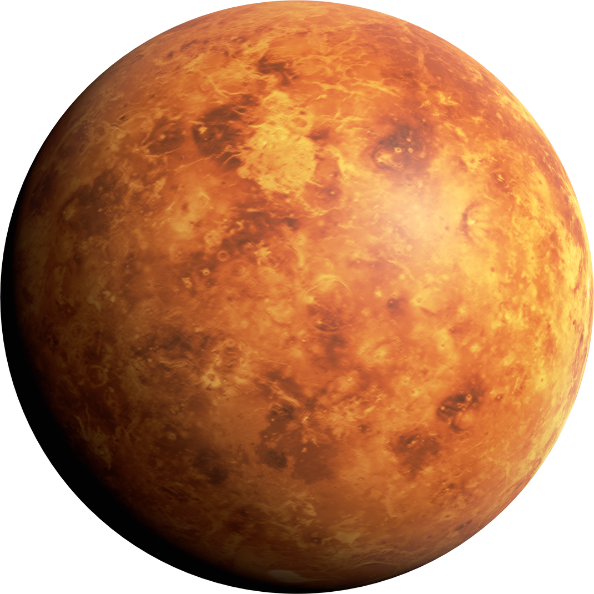
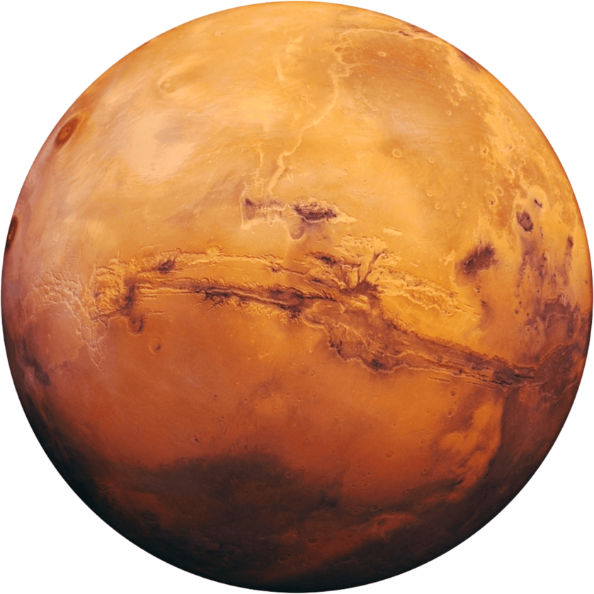
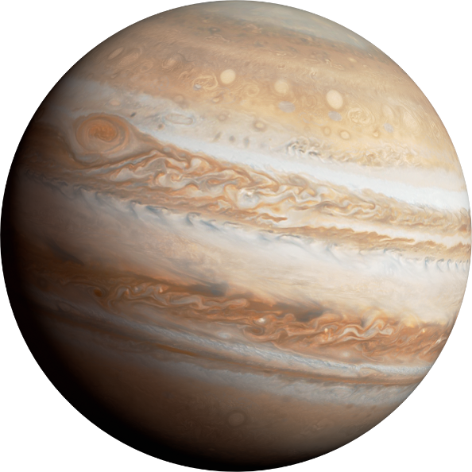

Sistema Solar
Sol
Nossa estrela central, fonte de luz e calor para todo o sistema solar. Uma esfera gigante de gás que brilha intensamente e é fundamental para sustentar a vida na Terra.
Lua
Nosso satélite natural, a Lua é um dos corpos celestes mais próximos da Terra. É um mundo rochoso sem atmosfera significativa, coberto por crateras, montanhas e mares (planícies de basalto).
Terra
Nosso lar, um oásis de vida em meio ao vasto vazio do espaço. Com uma atmosfera rica em oxigênio e água líquida em abundância, a Terra sustenta uma incrível diversidade de formas de vida, desde as profundezas dos oceanos até os picos das montanhas.
Mercúrio
O planeta mais próximo do Sol, Mercúrio é um mundo rochoso e escaldante, com temperaturas extremas que variam drasticamente entre o dia e a noite. Sua paisagem é marcada por crateras e desfiladeiros, enquanto sua órbita rápida o torna um dos corpos celestes mais difíceis de observar da Terra.
Vênus
Conhecido como "o planeta irmão da Terra" devido ao seu tamanho e composição semelhantes, Vênus é envolto por uma atmosfera densa de dióxido de carbono, criando um efeito estufa extremo que o torna o planeta mais quente do sistema solar. Seu céu perpetuamente nublado e sua superfície vulcânica fazem dele um mundo misterioso e intrigante.
Marte
Conhecido como o "Planeta Vermelho" devido à sua cor característica, Marte é um mundo rochoso com uma fina atmosfera de dióxido de carbono. Com suas calotas polares, vales profundos e montanhas imponentes, Marte tem fascinado os cientistas há séculos, com especulações sobre a possibilidade de abrigar vida e até mesmo de ser um destino futuro para a colonização humana.
Júpiter
O maior planeta do sistema solar, Júpiter é um gigante gasoso com uma atmosfera turbulenta repleta de tempestades, incluindo a famosa Grande Mancha Vermelha. Seus anéis tênues e suas numerosas luas, incluindo Io, Europa, Ganimedes e Calisto, fazem de Júpiter um sistema planetário em miniatura por si só.
Saturno
Conhecido por seus deslumbrantes anéis, Saturno é outro gigante gasoso que encanta os observadores do céu. Seus anéis compostos principalmente de gelo e poeira orbitam o planeta, criando um espetáculo único no sistema solar.
Urano
Um mundo gelado e inclinado de lado, Urano é um gigante de gás que se destaca por sua peculiar inclinação axial. Sua atmosfera azul esverdeada e sua série de anéis e luas o tornam um dos destinos mais intrigantes para exploração espacial.
Netuno
O último planeta do sistema solar, Netuno é um gigante gasoso frio e remoto. Sua atmosfera dinâmica apresenta ventos extremamente rápidos e uma grande mancha escura, enquanto suas luas e anéis adicionam mais mistério a este mundo distante.






